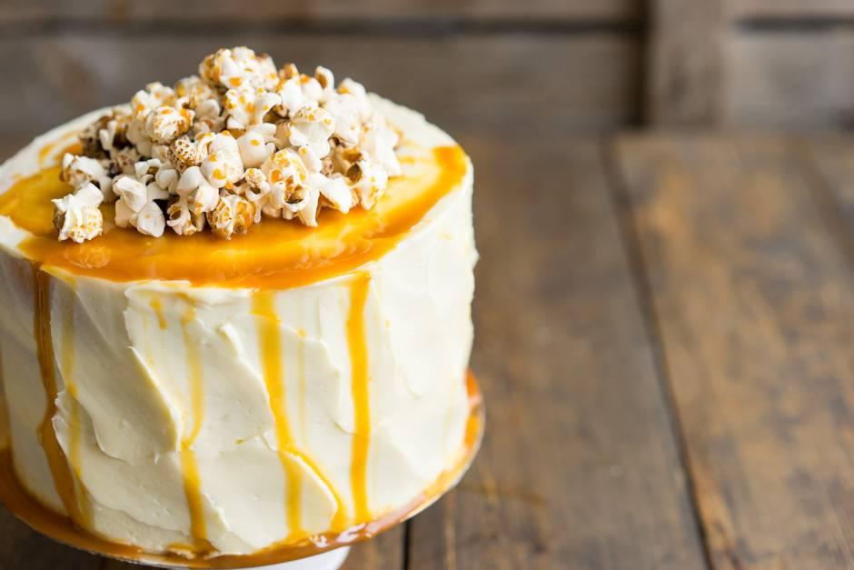

Creating and Decorating Cakes From Scratch
Dough preparation
Unless otherwise stated in the recipe, always use ingredients at the same (room) temperature. This means that when you are going to make a cake, take eggs, butter, milk and other cold ingredients out of the refrigerator for an hour. The fact is that, on the one hand, the ingredients mix better when they have the same temperature (now we are talking about the dough), on the other hand, the finished dough will be at room temperature and will quickly begin to bake in the oven.
Next is the porosity of the dough. For the cake to be airy, we need air bubbles. To do this, we use soda and baking powder, read a separate note about them and never repeat the mistakes of many. Sometimes you can do without them, but only if the recipe offers something different. In the recipe above, we took a lot of eggs, which are perfectly whipped into a foam with sugar. Proteins hold the structure (those same bubbles) and the dough does without additional help.
It is clear that bubbles are formed during the release of gas, during the reaction of alkali and acid (we recall chemistry lessons at school). To make it clear how this works, you can take a spoonful of soda and drop a couple of drops of vinegar. The mixture will begin to actively foam. These are the bubbles that form in our test. If a baking powder is added to the dough, then it is self-sufficient in itself (it contains both acid and alkali), and it will start working when the temperature rises, that is, in the oven. Such a dough is tolerant of waiting, for example, if you bake four cakes one by one. Another option is when vinegar, sour-milk products and so on are added to the dough. Then soda is used, which will combine with acid and bubbles will appear. This is how Red Velvet is made. These cakes are best baked as soon as possible, and do not leave the dough for a long time.
Working with Forms
How many hostesses, so many opinions about which forms are better. No wonder I have a blog post about what types of baking dishes are. For myself, I made a choice - these are, unambiguously, solid aluminum molds and, for rare tasks, detachable. They are convenient in that they perfectly keep their shape (unlike silicone ones, which have the properties of “walking”), are durable, easy to clean and behave predictably. The only restriction is that you cannot work with a knife. But these are trifles, I never cut cakes inside forms.
For my taste, the cake looks more beautiful when it has the same height and diameter, that is, square when viewed from the side. I don’t like big low cakes of 24 cm or more at all. Someone thinks that there is MORE cake, but more often you make the same amount of dough as I do, only my cakes look more interesting. Yes, and confectionery trends say that flat cakes are a thing of the past, while compact cakes, on the contrary, are gaining popularity. In addition, the cakes are thicker, and the cakes themselves from one dough batch are more. There must be at least three cakes in the cake. Aesthetic, beautiful, and delicious.

French Shirt
I won’t say where this name came from, but this is the best way to prepare a form for a future cake. The principle is very simple. The walls are smeared with cold butter (so the layer will be thinner), and dusted with flour on top. Pour out the excess flour. We have a form in our hands, with a thin layer of flour on the walls. I went ahead and use parchment circles that I put on the bottom of the form. So there are no problems with the excavation of the cakes at all, and you do not need to wash the form. Usually it looks like this: I make a French shirt, fill in a portion of the dough and bake the cake. I take it out of the mold, cool it a little, make the shirt again and bake the next cake again. You don't need to wash anything. I even use parchment from the first cake - I remove it and put it on the bottom of the mold.
This is what the “dusty” form looks like.
Dough dosage
I highly recommend having a scale in your arsenal. They save a lot of time and effort. And they also allow you to dose the dough very accurately. On the scales, find out the mass of your cup, in which you will beat the dough. Let's say it's 188 grams. Then we measure the weight of the bowl with the finished dough. We get 1088 grams. So the dough weighs 900 grams and is well divided into three cakes of 300 grams of dough. Put the baking dish on the scales, zero out and pour 300 grams of dough. Bake, repeat. In this case, the cakes will be of the same thickness, and this will help with assembly.
Oven
Let's agree that everyone's ovens are different (gas, electric, combi steamers), the sensors are also different. Different ovens heat differently and the temperature can vary. You need to understand what kind of oven you have. Perhaps the cakes are baked in it not for 20 minutes, as indicated in the recipe, but for all 35. So remember that there will always be more time. Or the top quickly burns at the cake, most likely in the oven not 180 degrees, but all 190. You need to get used to any oven, remember the adjustments and enjoy cooking.
In recipes, I always mean the “Top-Bottom” oven mode, and put the mold on the middle shelf in the oven. If you have a gas oven that gives a gift from below, or convection does not turn off, adjust the settings. And it's best to experiment on one type of test. Just make three cakes with different combinations (temperature higher, lower, shelf lower or higher). We ALWAYS preheat the oven to the temperature indicated in the recipe, you do not need to put the dough in the still cold oven.
Baking Process
So, you put the form in the oven and wait. Many baking recipes forbid opening the oven until the dessert is fully cooked. This applies to cakes on choux pastry and others. When you open the oven, the temperature drops sharply by 5-15 degrees in the first seconds. If the crust of the cakes has not yet had time to form, the air inside will compress and the cakes will settle. Try to wait patiently without opening the oven. With the usual dough for cakes, the situation is simpler, but it makes no sense to look in there often, the cake will not bake faster from this.
Readiness is ALWAYS checked in one and only one way: with a wooden skewer or match, we pierce the cake vertically in the very center. If it comes out dry (or with dry crumbs), then the cake is ready. If it is still damp, continue baking. There is no more reliable way to check than this. Cook cookies and custard cakes until golden brown.
A situation may occur that the cake starts to blush too much in the oven, but in the center it still remains wet, what should I do? Very simple. Cover the top of the cake with a sheet of foil, mirror side up - it will reflect heat and save the cake from burning.
And now the most common question is the tubercle. It's okay if the cake in the oven starts to look like a volcano, the middle rises up, forming a large hill. Its appearance is influenced by factors such as the dough itself, the material and size of the form, oven and temperatures. Let me explain his appearance. You poured the dough into a mold and put it in the oven. The walls of the form quickly heated up and began to bake the dough, forming a crust. The top crust also blushes from the edges of the form to the center. Therefore, it turns out that at some point the batter is sealed in the crust. What remains of the dough, which expands from temperature and bubbles? That's right, grow up. I've heard of ways to combat this such as wrapping the sides of the pan with a damp towel to slow down the crusting process. But I think it's more of a hassle.
Cooling the Cake
When our cake is ready, take it out of the oven and let it stand for a minute or two. It will shrink slightly, moving away from the walls of the form (you have already seen the photo above). Turn it over onto a rack. And take off the parchment. It can be used again on the next cake.
Turn the cake over again to the other side and let it cool completely.
What is cooling on the grate for? If the hot cake is put on a plate or on a board, it will simply start to sweat, become wet on one side, fall apart, and so on. So you need a lattice - to create an opportunity for cold air to circulate around the cake. We turned it over to the bottom because there one side of the cake will remain flat. If we leave the cake on the grate with the tubercle down, it will sag, bending the opposite side as well.
Wrap the finished and completely cooled cakes in a film and put them in the refrigerator for at least two hours. The secret is that the cakes become juicier in the refrigerator. Moisture from the center (drive it there in the oven) is distributed back throughout the entire volume of the cake. Thanks to this, by the way, it will crumble less. A cake that lies overnight in the refrigerator (in a film) will generally be a hundred times tastier than if you collect a cake from freshly cooled cakes. This is suitable for ANY cakes and even cupcakes / muffins: carrot, chocolate, red velvet - everything will be tastier.
Cutting the Cake
Remember I said that I measured an equal amount of dough into a mold? Therefore, all three cakes turned out to be the same height, even the tubercle was of a similar size. The rim is clearly visible in the photo.
Along the upper border, I will cut off the tubercle. For this you need a saw blade. A simple one won't work here. You can use strings for cakes, but I don't like them. Put your hand on the cake, hold the other knife horizontally and cut the cake just a couple of centimeters deep. With the hand that holds the cake on top, turn the cake, and with the knife, continue to make an incision. When you cut along the entire circumference, sink the knife even deeper and again, turning, cut.
Perhaps your cakes are not so even, or you want to make two identical cakes from one cake. Then you should use the beacon for the knife. Use any kitchen item that has straight edges and the height you want. I use cookie cutters. Put it close to the cake, put a knife on it and cut, also turning the cake. Again, all cakes will be the same height. Now you can soak the cakes. I do not do this.
If you cut just from left to right, there is a danger of cutting the cake obliquely. And with such small cuts, we will make the move smooth. Here's what happens.
Sometimes the sides of the cakes are also cut off. This is necessary in two cases: when the sides are very burnt and become hard, or when you are making a white biscuit and you want the sides to be white on the cut of the cake (without a thin strip from the crust). You can also cut off the sides so that they are better saturated with cream.
Confectioners manage to do this with a simple knife, cutting off thin strips of crust a little bit. Or you can use special rings (they will appear in the store soon). There, the principle is simple - take a ring 1-2 cm smaller in diameter than the form in which the cake was baked. Let's say you have a shape of 20 cm, then carefully cut out with a ring of 18 cm. A little uneconomical, but super aesthetically pleasing. The only point is that such shortbreads are softer (the crust does not hold the geometry), so you need to collect them more carefully so that they do not walk and become the Leaning Tower of Pisa.